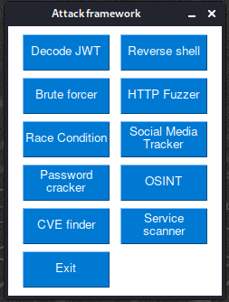

The purpose of this framework is to replicate some of the already existing tools out there, in order to fully understand and explain the processes behind the scene.
the framework consist of ten attack vectors.
- Decode JWT - decode any JWT and getting its payload data
- Reverse shell - Create a shell listener
- Brute forcer
- Send get/post/put/patch request to an endpoint.
- Leet a word
- Make all possible combinations with the given characters
- HTTP Fuzzer - Directory brute forcer
- Race condition - Send multiple request at the same time
- Social media tracker - Find on which social media sites a person have accounts
- Password cracker - detect hash type and crack them
- OSINT
- find location based on coordinates (lat,lang)
- Extract EXIF data from pictures
- CVE finder - Find all known vulnerabilities of a given service
- Service scanner - detect open ports and the services/versions running on those ports